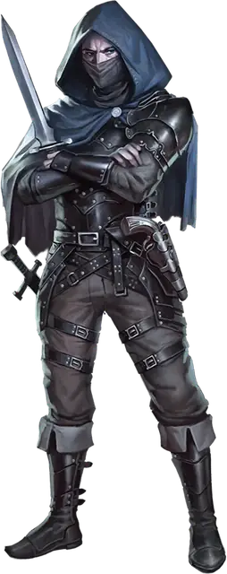

Преступный лорд бандитов
Bandit Crime Lord
Средний или Маленький Гуманоид, Нейтральный

Класс Защиты 17 Инициатива +9 (19)
Хиты 169 (26к8 + 52)
Скорость 30 футов
| мод | спас | ||
|---|---|---|---|
| СИЛ | 10 | +0 | +0 |
| ЛОВ | 20 | +5 | +9 |
| ТЕЛ | 14 | +2 | +6 |
| мод | спас | ||
|---|---|---|---|
| ИНТ | 18 | +4 | +4 |
| МДР | 14 | +2 | +2 |
| ХАР | 15 | +2 | +2 |
Чувства пассивное Восприятие 20
Языки Общий, Воровской жаргон
Опасность 11 (7 200 опыта; БВ +4)
Особенности
Увёртливость. Если бандитподвергается эффекту, позволяющему совершить спасбросок Ловкости, чтобы получить только половину урона, то вместо этого он вообще не получает никакого урона, если преуспевает в спасброске, и только половину, если проваливает его; для этого он не должен быть Недееспособным.
Действия
Мультиатака. Бандит совершает три атаки Скимитаром или Пистолетом в любой комбинации.
Скимитар. Бросок рукопашной атаки: +9, досягаемость 5 фт. Попадание: 12 (2к6 + 5) Рубящего урона плюс 14 (4к6) урона Ядом.
Пистоль. Бросок дальнобойной атаки: +9, дистанция 30/90 фт. Попадание: 10 (1к10 + 5) Колющего урона плюс 14 (4к6) урона Ядом.
Бонусные действия
Смертоносная точность. Бандит получает Преимущество на следующий бросок атаки в текущем ходу. При попадании эта атака наносит цели 28 (8к6) дополнительного урона Ядом.
Бонус мастерства +4
Среда обитания Любая
Сокровища Любые
Бандиты
Преступники и негодяи
С помощью угроз бандиты получают всё, что захотят. К этим преступникам относятся члены банд, головорезы и наёмники вне закона. Однако не всеми бандитами движет жадность. Некоторые из них стали вести такую жизнь из-за несправедливых законов, безысходности своего положения или под принуждением безжалостных главарей.
Совершите бросок по таблице «Мотив бандита» или выберите сами, почему бандит совершает преступления.
Мотив бандита
| 1к6 | Бандит… |
| 1 | Борется с угнетателями. |
| 2 | Был солдатом. Брошенный своим народом, теперь он берёт сам то, что ему обещали. |
| 3 | Состоит в банде, для которой все остальные — враги. |
| 4 | С неохотой служит злобному главарю. |
| 5 | Тайно выполняет задание правительства или местного правителя с целью посеять хаос. |
| 6 | Просто пытается выжить. |
Кто я? Владыка мира, а вы не знали? Я появляюсь то здесь, то там.
Джарлаксл
Преступные лорды управляют тайными организациями и готовы пожертвовать любым приспешником или планом ради собственного выживания.